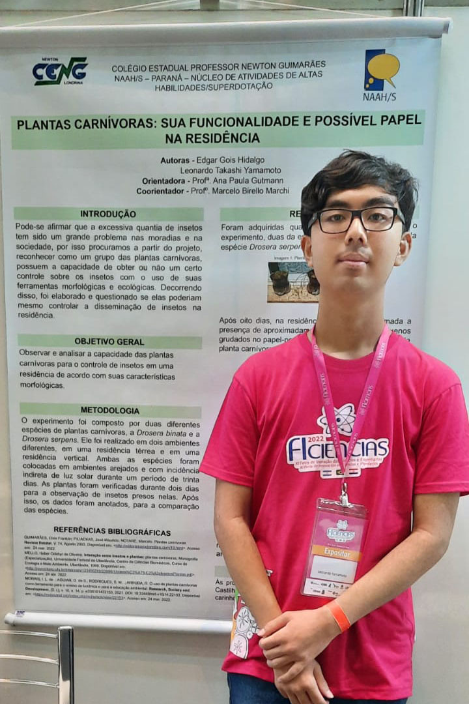

✦ Nessa página, você irá conhecer Leonardo Takashi Yamamoto, mais conhecido como "Takanashi". Também irá descobrir seus feitos históricos e importância na sua época.
• O que você precisa saber sobre Leo Takanashi ↓
Leonardo Takashi, foi um filósofo, físico e matemático renomado do século 0, descobriu o poder da energia elétrica, e também é considerado um dos maiores filósofos da história do planeta. Desde seu nascimento, sua mãe, Vanessa Takanashi, percebia a incrível capacidade de Léo, com armazenamento de conhecimentos e informações do cotidiano.
Até que em sua escola, no terceiro ano do fundamental, sua professora Débora, ficou abismada com tamanha inteligência, e o enviou para Hogwarts, onde se formou, e conheceu um dos maiores físicos da história, o físico Albert Heinstein, que foi o primeiro homem a pisar na lua. Leonardo criou a primeira máquina de calcular, a que chamamos de "Calculadora de Leonardo", e também foi o inventor do Cadeado de Metal, que usamos no nosso portão.
Sua morte ficou marcada na história, por ser tão influente e carismático, até hoje, Leonardo aparece nos livros de história de nossas escolas e aprendemos cada dia mais com ele.
"Falaram que eu devia seguir os meus sonhos, então eu virei pro lado e continuei dormindo."• Instagram de Leo Takanashi